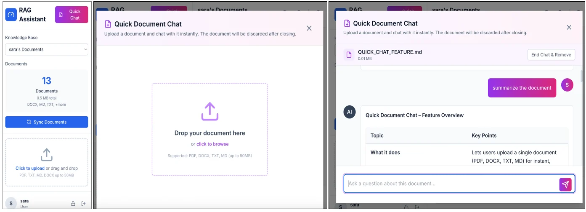
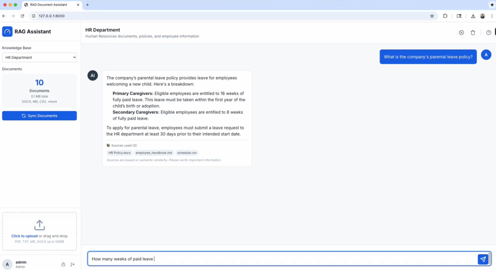

Your private AI chat for all your documents — running on hardware you control.
A production-ready, multi-user "chat with your documents" system powered by local AI. Build knowledge bases from your PDF, DOCX, TXT, MD, and CSV files, then ask questions and get answers grounded in your own documents. Models run locally through Ollama. No data leaves your server. No monthly AI bill.
Get the Source Code — Free Watch the DemoComplete source code with one-step installers for macOS, Linux, and Windows.
✓ Your documents never leave your server
✓ Local models via Ollama — Llama 3, Qwen, Gemma
✓ Multi-user accounts and permissions
✓ Admin dashboard: users, access, analytics
✓ Free via this page — no subscription
Self-Hosted RAG is a retrieval-augmented generation (RAG) application: it indexes your documents, finds the passages relevant to your question, and feeds them to a language model that runs on your own machine. Answers cite your material instead of guessing from general training data.
It ships with two chat modes. Knowledge Base Chat builds permanent document collections — ideal for a team that shares a reference library. Quick Document Chat lets any user drop in a single file for a one-time question, with nothing stored afterwards. Deployment runs in personal (single user) or team (multi-user) mode.
Built for people who cannot put documents in a cloud AI:
If you need to remove sensitive identifiers before loading documents, see PrivateRedact — offline PII redaction built on the same local-first principle.
One script does everything: bash install.sh on macOS/Linux or install.bat on Windows installs Ollama, pulls the default models (Qwen), and sets up the Python environment. You need Python 3.10+.
Create knowledge bases (a folder plus one config entry), or drop a file into Quick Chat for a one-time question. Upload rights can be enabled or disabled per knowledge base.
Open the web interface on your server, ask questions, and get answers grounded in your documents. Users get individual accounts; the admin sets read and upload permissions per knowledge base.
See the full walkthrough: complete demo video on YouTube. Code and documentation: GitHub repository.


Hosted assistants charge per seat every month, and using them means uploading the documents you would most like to keep private to someone else's servers. For many teams that is a compliance problem before it is a cost problem.
A notebook that answers questions over one PDF is a demo, not a deployment. This system ships the parts tutorials skip: user accounts, per-knowledge-base read and upload permissions, an admin dashboard, and a documented config for personal vs. team mode.
Generation and embeddings run locally through Ollama. The default setup uses compact Qwen models; on stronger hardware (20 GB+ VRAM or 24 GB+ unified memory) you can switch to a larger model with one config change and a single ollama pull.
Flask, ChromaDB, LangChain, and Ollama — standard, inspectable components with the full source included. When you self-host, "trust me" is not an architecture. You can audit exactly what the system does.
config.jsonRequires Python 3.10+ and Ollama (installed automatically by the setup script).
personal mode is available if you just want a single-user install.Get the complete source code, run it on your own hardware, and stop paying monthly fees for cloud AI that reads your documents.
Get it on Gumroad — Free Watch the Demo